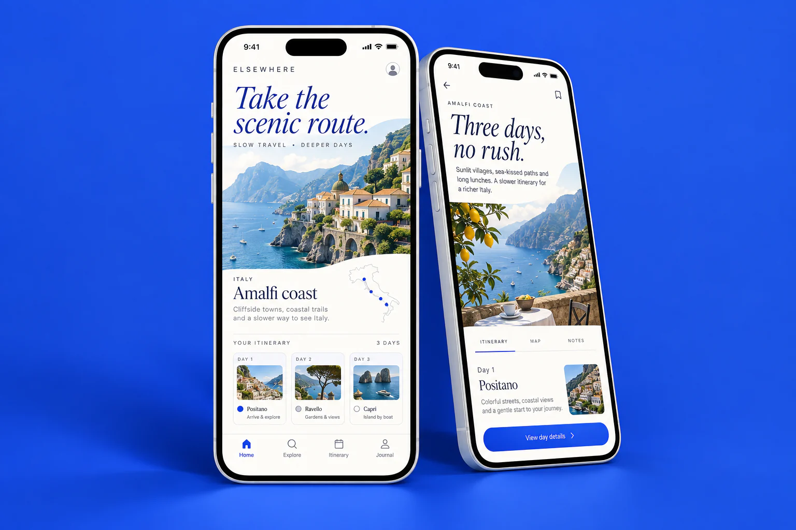

Find the visual language
Cobalt blue, generous white space and expressive serif typography bring a travel-journal feel to a practical planning interface.
Elsewhere
An editorial travel concept built around fewer stops, better discoveries and room to wander.

Itinerary tools can turn a trip into a crowded checklist. This concept explores planning a few meaningful moments while leaving the rest of the day open.
Cobalt blue, generous white space and expressive serif typography bring a travel-journal feel to a practical planning interface.
Browse destinations through visual, carefully paced stories.
Build a flexible day-by-day plan with travel time in mind.
Keep saved places and the trip overview together.
A self-initiated concept exploring the product experience and visual direction.